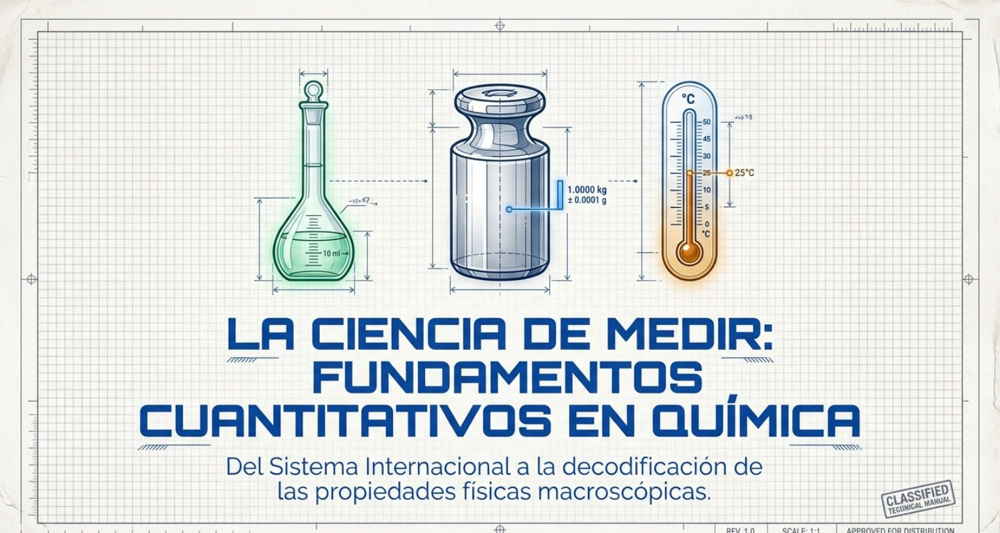

Aprende a medir como un químico: unidades, prefijos, densidad y temperatura.
Video8 leccionesLaboratorios17 ejerciciosTest
El lenguaje de la química
1
¿Qué es medir?
Medir es comparar algo con una cantidad que todos aceptamos como referencia, llamada unidad. Cuando dices que una mesa mide 2 metros, estás diciendo que en ella caben 2 veces la longitud de 1 metro.
Por eso toda medida tiene dos partes: un número y una unidad.
Si te digo «compra 2 de arroz», no sabes si son 2 libras, 2 kilos o 2 quintales. El número solo no sirve. «2 kg» sí dice algo.
En química medimos dos tipos de cosas:
Lo que vemos (macroscópico). Se mide directamente en el laboratorio: la longitud con una cinta métrica, la masa con una balanza, el volumen con una probeta, pipeta o bureta, la temperatura con un termómetro.
Lo que no vemos (microscópico). Los átomos y moléculas son tan pequeños que no se pueden medir con una regla. Sus propiedades se calculan de forma indirecta, a partir de lo que sí medimos.
Clave: un número sin unidad no tiene sentido. Siempre escribe la unidad.
2
Potencias de 10: el truco de mover el punto decimal
En química aparecen números muy grandes y muy pequeños. Para no escribir tantos ceros usamos potencias de 10.
En esta clase los decimales se escriben con punto (2.5), como en la calculadora. Si en el colegio usabas coma (2,5), es lo mismo.
Exponente positivo: cuántos ceros tiene el número. 10³ = 10 × 10 × 10 = 1000 (tres ceros)
Exponente negativo: cuántos lugares se mueve el punto decimal hacia la izquierda. 10⁻³ = 1 ÷ 1000 = 0.001
Multiplicar por 10³ es mover el punto decimal 3 lugares a la derecha: 2.5 × 10³ = 2500. Multiplicar por 10⁻³ es moverlo 3 lugares a la izquierda: 350 × 10⁻³ = 0.350.
Mini laboratorio: mueve el exponente
× 10 elevado al exponente
3
El Sistema Internacional (SI)
Antes, cada país medía a su manera (pies, varas, libras, onzas) y era un caos para la ciencia. En 1960 se acordó un solo sistema para todo el mundo: el Sistema Internacional de Unidades, o SI. Hoy tiene 7 unidades básicas (el mol se agregó en 1971); todas las demás se forman combinándolas.
Qué mide (magnitud)
Unidad
Símbolo
Longitud
metro
m
Masa
kilogramo
kg
Tiempo
segundo
s
Temperatura
kelvin
K
Cantidad de sustancia (cuántas partículas hay; lo verás en otra clase)
mol
mol
Corriente eléctrica (la electricidad que pasa por un cable)
amperio
A
Intensidad de la luz (qué tan fuerte brilla una fuente)
candela
cd
Clave: en química las que más usarás son metro, kilogramo, kelvin y mol. Ojo: la unidad de masa del SI es el kilogramo, no el gramo.
4
Prefijos: la escalera de unidades
Medir la distancia entre ciudades en metros da números enormes, y medir una pastilla en gramos da números muy pequeños. Por eso se pegan prefijos delante de la unidad: kilometro, miligramo, mililitro. Cada prefijo es una potencia de 10.
Prefijo
Símbolo
Vale
En número
tera
T
10¹²
1 000 000 000 000
giga
G
10⁹
1 000 000 000
mega
M
10⁶
1 000 000
kilo
k
10³
1000
hecto
h
10²
100
deca
da
10¹
10
sin prefijo (metro, gramo, litro)
—
10⁰
1
deci
d
10⁻¹
0.1
centi
c
10⁻²
0.01
mili
m
10⁻³
0.001
micro
µ
10⁻⁶
0.000 001
nano
n
10⁻⁹
0.000 000 001
pico
p
10⁻¹²
0.000 000 000 001
Cómo convertir sin equivocarte
Usa un factor de conversión: una fracción que vale 1 porque arriba y abajo hay lo mismo (1 km y 1000 m son la misma distancia). La unidad que quieres eliminar va abajo para que se cancele.
3.5 km × (1000 m / 1 km) = 3500 m
«Cancelar» es como simplificar una fracción: km arriba y km abajo se tachan, y solo queda la unidad que buscas (m).
Clave: de una unidad grande a una pequeña, el número crece (multiplicas). De una pequeña a una grande, el número se achica (divides).
Mini laboratorio: convertidor
a
5
Masa y peso no son lo mismo
Masa (m): cuánta materia tiene un objeto. No cambia aunque lo lleves a otro planeta. Se mide con la balanza. Unidad SI: kilogramo (kg); en el laboratorio se usa el gramo (g). 1 kg = 1000 g.
Peso (W): la fuerza con la que un planeta jala a ese objeto hacia abajo. Sí cambia según la gravedad del lugar. Es una fuerza, por eso se mide en newtons (N).
Peso = masa × gravedad (W = m × g)
La g es la fuerza de gravedad del lugar: en la Tierra vale 9.8 y en la Luna 1.6. Para que te hagas una idea, 1 N es más o menos lo que pesa una manzana pequeña (100 g) en la Tierra.
En la vida diaria decimos «peso 60 kilos», pero en ciencia eso es tu masa. En la Luna tu masa seguiría siendo 60 kg, pero pesarías unas 6 veces menos, porque su gravedad es más débil.
Mini laboratorio: viaja con tu masa
6
Volumen: el espacio que ocupa algo
El volumen es cuánto espacio ocupa un cuerpo. No es una magnitud básica: sale de multiplicar longitudes (largo × ancho × alto). Por eso sus unidades llevan un ³ (cúbico).
La unidad SI es el metro cúbico (m³), pero es enorme, así que en el laboratorio usamos el litro (L) y el mililitro (mL).
1 L = 1000 mL = 1000 cm³ = 1 dm³
dm = decímetro = 10 cm. Un dm³ es un cubo de 10 cm de lado.
1 mL = 1 cm³
1 m³ = 1000 L
Imagina un cubo de 10 cm de lado. Le caben 10 × 10 × 10 = 1000 cubitos de 1 cm. Cada cubito es 1 mL, así que el cubo grande es exactamente 1 litro.
Instrumentos: la probeta (mide rápido), la pipeta y la bureta (miden con mucha precisión) y el matraz volumétrico (prepara un volumen exacto).
Mini laboratorio: arma un cubo
7
Densidad: ¿por qué unas cosas flotan y otras se hunden?
Un kilo de algodón y un kilo de hierro tienen la misma masa, pero el algodón ocupa muchísimo más espacio. La diferencia es la densidad: cuánta masa hay en cada unidad de volumen. Es qué tan «apretada» está la materia.
densidad = masa ÷ volumen (d = m / V)
Para despejar, tapa con el dedo lo que buscas en este triángulo: arriba la masa, abajo la densidad por el volumen.
Buscas d: d = m / V
Buscas m: m = d × V
Buscas V: V = m / d
Unidades: para sólidos y líquidos g/cm³ o g/mL (son lo mismo, porque 1 cm³ = 1 mL). Para gases, que son muy livianos, g/L.
La densidad es una propiedad intensiva: no depende de cuánto material tengas. Un clavo y una viga de hierro tienen la misma densidad (7.9 g/cm³). Por eso sirve como «huella digital» para saber de qué está hecho algo.
Sustancia (25 °C)
Densidad (g/cm³)
En agua
Aire
0.0012
sube
Etanol (alcohol)
0.79
queda encima
Agua
1.00
referencia
Aluminio
2.70
se hunde
Hierro
7.9
se hunde
Mercurio
13.6
se hunde
Oro
19.3
se hunde
Osmio (el elemento natural más denso)
22.6
se hunde
Clave: si un objeto macizo tiene densidad menor que la del agua (1.00 g/mL), flota. Si es mayor, se hunde. El tamaño no importa. (Un barco de hierro flota porque es hueco: lleva mucho aire adentro.)
Truco del laboratorio: si un objeto tiene forma rara y no puedes medirle largo, ancho y alto, mételo en una probeta con agua. Lo que sube el agua es el volumen del objeto. Esto se llama desplazamiento de agua.
Mini laboratorio: lánzalo al agua
8
Temperatura: tres escalas
La temperatura indica qué tan caliente o frío está algo. Hay tres escalas, y cada una pone su «cero» en un lugar distinto:
Celsius (°C)
Fahrenheit (°F)
Kelvin (K)
Agua hierve
100 °C
212 °F
373.15 K
Agua se congela
0 °C
32 °F
273.15 K
Cero absoluto
−273.15 °C
−459.67 °F
0 K
Quién la usa
Ecuador y casi todo el mundo
EE. UU.
la ciencia (unidad SI)
El cero absoluto es lo más frío que puede existir. La escala Kelvin empieza ahí, por eso nunca tiene números negativos y no lleva el símbolo de grado: se escribe 300 K, no 300 °K.
Entre el hielo y el agua hirviendo, Celsius y Kelvin tienen 100 divisiones y Fahrenheit tiene 180. Por eso un grado Celsius es igual de grande que un kelvin, pero más grande que un grado Fahrenheit (1 °F = 5/9 de 1 °C).
K = °C + 273.15
°F = (9/5 × °C) + 32
°C = (°F − 32) × 5/9
Clave: de Celsius a Fahrenheit: primero multiplicas por 9/5, después sumas 32. De vuelta: primero restas 32, después multiplicas por 5/9. El orden importa. En muchos exámenes de ingreso se usa el atajo K = °C + 273.
Mini laboratorio: mueve el termómetro
Celsius
Fahrenheit
Kelvin
Mapa mental
Toca cada flecha amarilla para abrir la rama.
Láminas de la clase
Toca la imagen para verla en grande.

1 / 14
Ejercicios guiados
Resuélvelo en tu cuaderno y escribe tu respuesta. Si te trabas, pide una pista.
Test: Mediciones en Química
25 preguntas de opción múltiple. Trabaja solo, con cuaderno y calculadora. No verás si acertaste hasta el final; ahí verás tu nota y la corrección de cada pregunta.